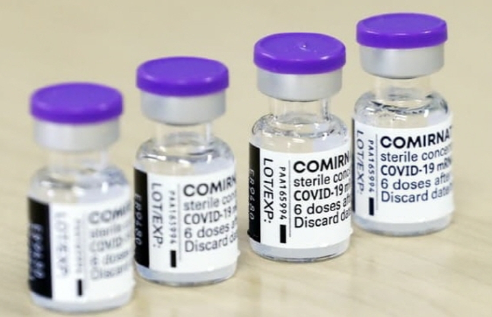

mRNA 치료제
mRNA 치료제는 유전 정보를 직접 전달해 세포가 치료 단백질을 만들도록 하는 차세대 바이오 신약입니다. 코로나19 백신으로 유명하며, 암·희귀질환·자가면역질환 등 다양한 분야로 확장되고 있습니다.
- 작용 원리: mRNA 전달→세포 내 단백질 발현→질병 치료
- 주요 적용: 감염병 백신, 암, 유전질환
- 산업/사회 영향: 신약 개발 속도 혁신, 맞춤의학 실현
mRNA 치료제는 유전 정보를 직접 전달해 세포가 치료 단백질을 만들도록 하는 차세대 바이오 신약입니다. 코로나19 백신으로 유명하며, 암·희귀질환·자가면역질환 등 다양한 분야로 확장되고 있습니다.